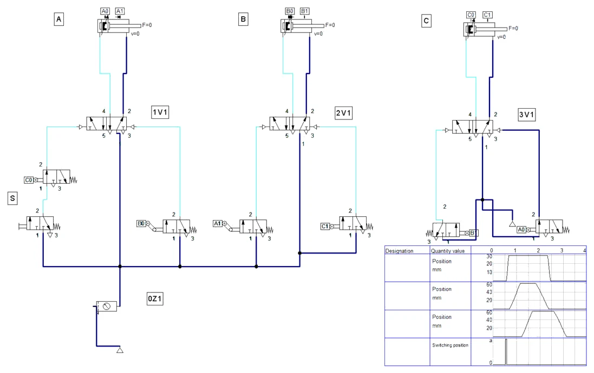
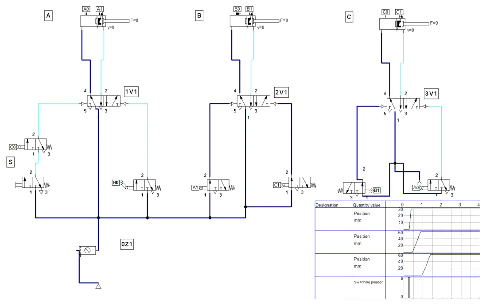
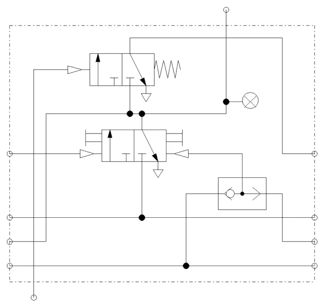
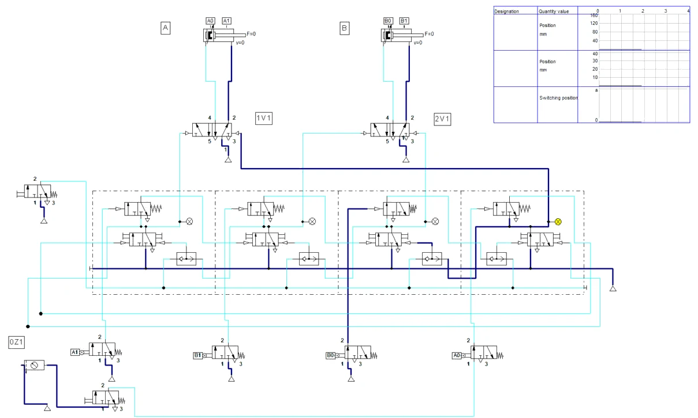
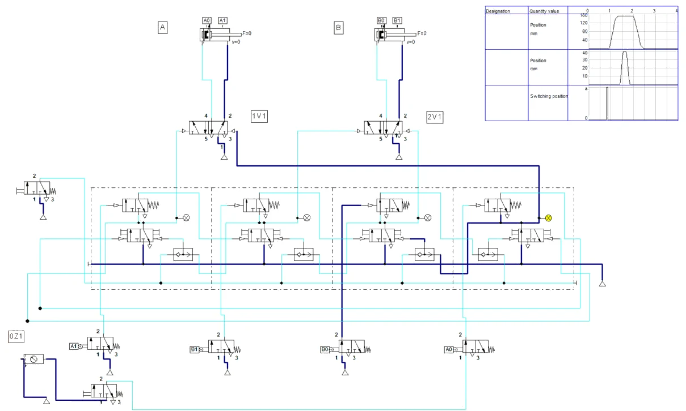

POSTUPAK · RADNI LIST V06 · FLUIDSIM
Postupak V06 · vježbe V12 i V14 · 4 sata
Postupak V06 — VDMA metoda s tri cilindra i taktna metoda u FluidSIM-u
Cijeli radni list V06 korak po korak: slijed A+ B+ C+ B− A− C− VDMA metodom s jednosmjernim valjcima i pokus s blokirajućim signalom, zatim slijed A+ B+ B− A− taktnim lancem od četiri modula. Uz svaki korak su snimke zaslona i potpuna rješenja.
- proširiti sklop s dva cilindra na tri i odrediti koji su signali blokirajući
- ukloniti blokirajuće signale jednosmjernim valjcima i pokazati blokadu pokusom
- složiti taktni lanac od modula TAA i TAB i zatvoriti ga u krug
- spojiti izlaze modula na razvodnike i potvrde gibanja na ulaze X
- pustiti lanac u rad iz osnovnog stanja i pratiti aktivni modul
- spremiti shemu, popuniti zapis simulacije i predati rad
O postupku
Ova stranica je postupak za radni list V06: sve što se radi na računalu, od nove sheme do predaje, redom kojim je zadano. Tekst zadatka, sheme, pitanja i rješenja isti su kao na stranicama vježbi V12 VDMA metoda s tri cilindra — blokirajući signal i V14 Taktna metoda s dva cilindra; ovdje su dopunjeni koracima u FluidSIM-u i rezultatima simulacije.
Rješenja su skrivena ispod svakog pitanja. Najprije riješite sami, a onda otvorite Prikaži rješenje i usporedite.
Gotove sheme (rješenja) za FluidSIM
- PIH_V12_rjesenje_v01.ct — dio A: shema V12.1 (A+ B+ C+ B− A− C−, jednosmjerni valjci a1 i b0), dijagram put–korak
- PIH_V12_a1_obicni_valjak_v01.ct — dio A: pokus s običnim valjkom a1 (sklop stane nakon C+)
- PIH_V14_rjesenje_v01.ct — dio B: taktni lanac V14.1 (T1–T3 TAA, T4 TAB), dijagram put–korak
Datoteke se otvaraju u FluidSIM-P 4 (File → Open). Snimke zaslona napravljene su u FluidSIM-P 4.2 s engleskim sučeljem. Osnove rada u FluidSIM-u (nova shema, knjižnica, crtanje vodova, provjera, simulacija, dijagram put–korak) opisane su u Postupku V01, odjeljak 0.
0 · Prije početka
- File → New (Ctrl + N) otvara novu shemu; Window → Tile Vertically (Shift + F4) postavlja shemu i knjižnicu jednu uz drugu.
- Elemente povucite iz knjižnice na shemu i dvoklikom otvorite njihove dijaloge. Vod crtajte povlačenjem od priključka do priključka; povlačenjem na postojeći vod nastaje račvanje.
- Oznake (1A1, 1V1, 1S1, 0Z1 …) upisuju se elementom Text iz skupine Miscellaneous (uključite Frame Text).
- Execute → Check Superficially (F6) provjerava crtež; Start (F9), Pause (F8), Stop (F5).
- Ručno tipkalo aktivirate klikom mišem (dok držite tipku miša); Shift + klik zadrži ga pritisnutim. Ručica sa zasunom prebacuje se jednim klikom i ostaje u položaju.
- Granični ventil veže se uz cilindar oznakom: dvoklik na cilindar → kartica Actuating Labels → oznaka (npr. 1S2) i položaj na hodu (od–do u mm); ista oznaka upiše se dvoklikom na valjak graničnog ventila (Mechanical connection → Label).
- Dijagram put–korak: iz Miscellaneous povucite State Diagram i na njega povucite cilindre i ventile čije stanje želite pratiti.
Dio A · V12 VDMA metoda s tri cilindra — blokirajući signal
Zadatak
Čelična traka presjeka 20 × 2 mm savija se u oblik slova U na krutoj matrici. Radnik uloži odrezani komad trake i pritisne tipkalo S. Tada:
- cilindar A (Ø32/12 mm, hod 30 mm) steže traku odozgo na matricu,
- cilindar B (Ø50/20 mm, hod 60 mm) savija lijevi krak,
- cilindar C (Ø50/20 mm, hod 60 mm) savija desni krak,
- B se vraća, zatim A otpušta stezanje, a C se vraća posljednji. Dok je izvučen, C pridržava desni krak, pa elastični povrat materijala ne podiže komad s matrice u trenutku otpuštanja stezača.
A+ B+ C+ B− A− C−
Mreža ima 6 bar pretlaka. Probom je utvrđeno da je za savijanje jednog kraka potrebna sila od 800 N. Planirani ritam je 6 komada u minuti, a ručno ulaganje i vađenje traje oko 7 s. Ciklus smije krenuti samo iz osnovnog položaja, odnosno kad je C uvučen (c0).
U vježbi V11 blokirajući signal postojao je na oba razvodnika. S tri cilindra to više nije pravilo: neki razvodnici imaju blokirajući signal, a neki nemaju. Vaš je zadatak odrediti koji su signali blokirajući, riješiti ih jednosmjernim valjcima, spojiti sklop i provjeriti rad.
Sigurnost pri radu
Pažnja
Tri cilindra znače tri zone gnječenja. Prije otvaranja zraka provjerite da nitko nema ruke na ploči, da su sve cijevi utaknute do kraja i da su neiskorišteni priključci razdjelnika začepljeni. Prvo puštanje radite pri 3 bar. Ako se sklop zaustavi u međupoložaju, prvo zatvorite zrak i odzračite sustav, a tek onda tražite uzrok; razvodnici su bistabilni i zadržavaju položaj, pa cilindar može krenuti čim se zrak ponovno otvori.
Shema
Razvodnik 3V1 dobiva signale b1 i a0 preko običnih valjaka. Pokušajte prije rješavanja pitanja 2 i 3 sami provjeriti zašto na njemu nije potreban jednosmjerni valjak.
Vježba se radi u FluidSIM-u
Koraci postupka vježbe koji se odnose na spajanje na didaktičkoj ploči i mjerenje štopericom ili manometrom izvode se u simulaciji. Gdje simulacija ne može pokazati pojavu iz pokusa, to je napisano uz korak.
A1 · Shema V12.1 u FluidSIM-u
- Za polazište uzmite shemu V11 (dva cilindra, jednosmjerni valjci) i spremite je pod novim imenom. File → Drawing Size: DIN A2, položeno (tri cilindra i dijagram ne stanu na A3). 0Z1 = 0,6 MPa.
- Parametri cilindara (dvoklik → Parameters): A Ø32/12, hod 30 mm; B i C Ø50/20, hod 60 mm. Razvodnici 1V1, 2V1 i 3V1: 5/2 s obostranim pneumatskim upravljanjem (5/2-way impulse valve), nazivni protok 60 l/min kao u V11.
- Skupinu B (cilindar, razvodnik, oba granična ventila i vodove između njih) označite okvirom, kopirajte i zalijepite desno — to je skupina C. Oznake promijenite u C i 3V1.
- Granični ventili (3/2 NC, bez Piloted) i Actuating Labels: A — a0 na 0–1 mm, a1 jednosmjerni valjak na 26–28 mm (impuls pri izvlačenju A); B — b0 jednosmjerni na 2–12 mm (impuls pri uvlačenju B), b1 na 59–60 mm; C — c0 na 0–1 mm, c1 na 59–60 mm.
- Upravljački vodovi prema shemi V12.1: S → c0 → 14 na 1V1; b0 → 12 na 1V1; a1 → 14 na 2V1; c1 → 12 na 2V1; b1 → 14 na 3V1; a0 → 12 na 3V1. Ventil b1 zrcaljen je vodoravno (Mirror → Horizontal) da vod od priključka 1 ne prolazi preko ispuha 3.
- Ulaze 1 razvodnika i graničnih ventila spojite na napajanje. Skupina C u našoj shemi ima vlastiti simbol izvora zraka (Compressed air supply) — tako se izbjegnu vodovi koji se preklapaju. F6 → No superficial errors detected.
- State Diagram s A, B, C i S; Fixed interval 0–4 s. Start (F9) i kratko pritisnite S (Slika A1.1).

Iz simulacije: trajanje koraka
Iz dijagrama: A+ 1,02–1,13 s, B+ 1,15–1,50 s, C+ 1,58–1,95 s, B− 2,10–2,48 s, A− 2,52–2,63 s, C− 2,78–3,23 s; S je pritisnut u 0,98 s. Ciklus oko 2,3 s, dulji od procjene 2,0 s iz pitanja 6 jer su razvodnici namješteni na 60 l/min.
A2 · Pokus: obični valjak umjesto jednosmjernog a1
- Shemu spremite pod drugim imenom. Jednosmjerni valjak a1 zamijenite običnim valjkom (kopirajte jedan od običnih graničnih ventila, stari obrišite i ponovno spojite vodove 2 → 14 na 2V1 i 1 → napajanje) i oznaku a1 na cilindru A postavite na 29–30 mm.
- Start i pritisnite S: izvedu se A+, B+ i C+, a zatim sklop stane (Slika A2.1).

A3 · Pitanja i zadaci
1. Napišite za svaki korak slijeda A+ B+ C+ B− A− C− signal koji ga pokreće i priključak razvodnika na koji taj signal djeluje.
Prikaži rješenje
| Korak | Gibanje | Signal | Priključak |
|---|---|---|---|
| 1 | A+ | S · c0 | 14 na 1V1 |
| 2 | B+ | a1 | 14 na 2V1 |
| 3 | C+ | b1 | 14 na 3V1 |
| 4 | B− | c1 | 12 na 2V1 |
| 5 | A− | b0 | 12 na 1V1 |
| 6 | C− | a0 | 12 na 3V1 |
2. Nacrtajte dijagram put–korak za sva tri cilindra i ispod njega trake trajanja svih šest graničnih signala. Označite korake u kojima neki razvodnik istodobno dobiva signal za izvlačenje i za uvlačenje.
Prikaži rješenje
U koraku 1 signal b0 još traje (B je uvučen od kraja prošlog ciklusa), a S·c0 traži A+. U koraku 4 signal a1 još traje (A je izvučen), a c1 traži B−. Blokirajući signali su b0 i a1. Na razvodniku 3V1 preklapanja nema: kad b1 traži C+, a0 ne postoji jer je A izvučen, a kad a0 traži C−, b1 ne postoji jer se B već vratio.
U FluidSIM-u
U simulaciji (Slika A1.1) jednosmjerni valjci a1 i b0 daju samo kratak impuls, pa se preklapanje u koracima 1 i 4 ne vidi; kad se a1 zamijeni običnim valjkom, preklapanje u koraku 4 zaustavi sklop (Slika A2.1).
3. Signal koji pokreće neko gibanje traje sve dok se cilindar koji ga je dao ponovno ne pomakne. Na temelju te činjenice oblikujte pravilo za prepoznavanje blokirajućeg signala samo iz zapisa slijeda i provjerite ga za sva tri cilindra.
Prikaži rješenje
Pravilo: gibanje X+ pokreće kraj gibanja nekog drugog cilindra Y. Ako se X− mora dogoditi prije nego što se Y ponovno pomakne, signal od Y još postoji kad treba X−, pa je blokirajući. Isto vrijedi obrnuto za signal koji pokreće X−.
Provjera: B+ pokreće a1; B− (korak 4) dolazi prije A− (korak 5) → a1 je blokirajući. C+ pokreće b1; B se ponovno giba u koraku 4, prije C− u koraku 6 → nema blokade. A− pokreće b0 (korak 5); B se ponovno giba tek u koraku 2 sljedećeg ciklusa, a A+ dolazi već u koraku 1 → b0 je blokirajući. Ostali signali (c0, c1, a0) provjere se jednako i nisu blokirajući.
4. Izračunajte stvarnu silu izvlačenja cilindra B pri 6 bar uz stupanj djelovanja 0,9. Kolika je rezerva prema potrebnih 800 N i koji je najmanji tlak pri kojem B još savija krak?
Prikaži rješenje
A = π · 50² / 4 = 1963,5 mm² → F = 0,9 · 0,6 · 1963,5 ≈ 1060 N
Rezerva: 1060 / 800 ≈ 1,33, tj. oko 33 %. Najmanji tlak: p = F / (η · A) = 800 / (0,9 · 1963,5) ≈ 0,453 N/mm² = 4,53 bar. Ispod oko 4,5 bar krak se neće potpuno saviti; to je podatak za namještanje tlačne sklopke ili za upute rukovatelju.
5. Izračunajte potrošnju zraka po ciklusu, u minuti pri 6 ciklusa/min i u smjeni od 7,5 sati neprekidnog rada. Zadano: 6 bar, 1,013 bar atmosferski tlak, promjeri i hodovi iz zadatka.
Prikaži rješenje
Omjer kompresije: (6 + 1,013) / 1,013 = 6,923.
A: (804,2 + 691,2) mm² · 30 mm = 44 860 mm³ = 44,9 cm³ → 44,9 · 6,923 ≈ 0,31 Nl.
B i C (svaki): (1963,5 + 1649,3) mm² · 60 mm = 216 770 mm³ = 216,8 cm³ → 216,8 · 6,923 ≈ 1,50 Nl.
Ukupno ≈ 0,31 + 1,50 + 1,50 = 3,31 Nl po ciklusu → 3,31 · 6 ≈ 19,9 Nl/min → 19,9 · 60 · 7,5 ≈ 8 940 Nl ≈ 8,9 m³ po smjeni (bez gubitaka u cijevima i propuštanja).
6. Klipnjača A giba se brzinom 0,1 m/s, a klipnjače B i C brzinom 0,2 m/s u oba smjera. Svako prebacivanje razvodnika s punjenjem upravljačkog voda traje oko 30 ms. Procijenite trajanje ciklusa i provjerite može li se uz 7 s ručnog rukovanja ostvariti ritam od 6 komada u minuti.
Prikaži rješenje
Gibanja: A 2 · 30 mm / 100 mm/s = 0,6 s; B 2 · 60 / 200 = 0,6 s; C 0,6 s. Zbroj 1,8 s, uz 6 · 0,03 = 0,18 s prebacivanja → oko 2,0 s. S ručnim rukovanjem 2,0 + 7 = 9,0 s po komadu, a ritam 6 komada/min dopušta 10 s. Cilj je ostvariv uz rezervu od oko 1 s. Izmjereno vrijeme na ploči bit će nešto dulje zbog manjih cilindara, duljih vodova i prigušenja.
U FluidSIM-u
U simulaciji ciklus traje oko 2,3 s (razvodnici 60 l/min, bez tereta) — uz 7 s ručnog rukovanja to je oko 9,3 s po komadu, i dalje unutar 10 s.
7. U koraku 7 postupka umjesto jednosmjernog valjka a1 ugrađen je obični valjak. U kojem se koraku sklop zaustavlja, u kojem su položaju tada cilindri i kako biste taj kvar opisali serviseru koji ne zna shemu?
Prikaži rješenje
Sklop se zaustavlja na početku koraka 4: A, B i C su izvučeni, a B se ne vraća. Na 2V1 istodobno djeluju a1 (14) i c1 (12). Opis za servisera: „Nakon savijanja desnog kraka lijevi savijač ostaje naprijed; na razvodniku 2V1 tlak postoji na oba upravljačka priključka.“ Takav opis, s položajem svih cilindara i mjestom gdje je tlak, brže vodi do uzroka nego „naprava je stala“.
U FluidSIM-u
U simulaciji (Slika A2.1) sklop stane točno kako je opisano: A, B i C izvučeni, oba upravljačka priključka 2V1 pod tlakom (tamnoplavi vodovi).
8. Dopuna sheme: brzinu savijanja cilindra B treba smanjiti, a povrat ostaviti brzim. Na shemu V12.1 ucrtajte jednosmjerni prigušni ventil, označite na kojem vodu stoji i kako je okrenut nepovratni ventil.
Prikaži rješenje
Jednosmjerni prigušni ventil ugrađuje se u vod između priključka 2 razvodnika 2V1 i strane klipnjače cilindra B. Pri B+ zrak izlazi iz strane klipnjače kroz prigušnicu (prigušivanje odlaznog zraka), a nepovratni ventil je zatvoren. Pri B− zrak ulazi u stranu klipnjače kroz otvoreni nepovratni ventil, pa je povrat brz. Nepovratni ventil je dakle okrenut tako da propušta prema cilindru. Prigušivanje odlaznog zraka daje mirnije gibanje od prigušivanja dolaznog zraka jer je klip „uklješten“ između dva stupca zraka.
Dio B · V14 Taktna metoda s dva cilindra
Zadatak
Na kraju linije za pakiranje na svaku kartonsku kutiju utiskuje se datum pakiranja. Traka dovodi kutiju do stanice, a zatim:
- cilindar A (Ø25/10 mm, hod 150 mm) gura kutiju s trake do graničnika i drži je,
- cilindar B (Ø32/12 mm, hod 40 mm) spušta žig s bojom na poklopac kutije,
- B podiže žig, a A se vraća i oslobađa mjesto za sljedeću kutiju.
A+ B+ B− A−
Isti slijed riješen je u vježbi V11 VDMA metodom s jednosmjernim valjcima. Ovdje se rješava taktnom metodom: za svaki korak slijeda postoji jedan taktni modul (T1–T4). Moduli su povezani u lanac i u svakom trenutku aktivan je samo jedan. Aktivni modul daje signal za svoje gibanje i omogućuje sljedeći modul; sljedeći se modul aktivira tek kad stigne potvrda da je gibanje završeno (signal Xn), a tada briše prethodni.
Zadani podaci: mreža 6 bar, potrebna sila žiga 300 N, ritam 12 kutija u minuti. Traka dovodi novu kutiju za 3,6 s. Ciklus pokreće tipkalo S (u pogonu bi ga zamijenio senzor kutije).
Sigurnost pri radu
Pažnja
Taktni lanac pamti stanje. Ako je nakon prethodnog rada ostao aktivan neki modul u sredini lanca, pri otvaranju zraka odmah će krenuti njegovo gibanje. Prije svakog puštanja u rad pritisnite L (postavljanje osnovnog stanja) tek kad ste provjerili da nitko nema ruke u zoni žiga. Žig ima malu silu, ali kutija se gura hodom od 150 mm: prste ne stavljajte između kutije i graničnika. Spajanje samo bez tlaka, uz zaštitne naočale.
Shema
Priključci napajanja modula i ventil L na shemi nisu nacrtani da crtež ostane čitljiv: svaki modul ima priključak za zrak iz razdjelnika, a L se razvodi na sve module. Granični ventili napajaju se izravno iz razdjelnika — u taktnoj metodi ne trebaju grupni vodovi.
Vježba se radi u FluidSIM-u
Koraci postupka vježbe koji se odnose na spajanje na didaktičkoj ploči i mjerenje štopericom ili manometrom izvode se u simulaciji. Gdje simulacija ne može pokazati pojavu iz pokusa, to je napisano uz korak.
B1 · Taktni lanac V14.1 u FluidSIM-u
- Nova shema (File → New), DIN A2 položeno. Iz knjižnice, skupina Valve Groups, uzmite taktne module: tri puta Stepper module, type TAA (T1, T2, T3) i jednom Stepper module, type TAB (T4). Modul TAB se ulazom L postavlja, a TAA se briše — zato je TAB zadnji modul u lancu.
- Građa modula (Slika B1.1): memorija je ventil 3/2 s obostranim pneumatskim upravljanjem, funkcija I je ventil 3/2 s oprugom, a ILI naizmjenični ventil. Priključci: lijevo Yn (postavljanje), P (napajanje), Zn (brisanje prethodnog), L; desno isti, za sljedeći modul; gore izlaz A, dolje ulaz X.
- Module poredajte jedan uz drugi tako da se desni priključci jednog poklope s lijevima sljedećeg (fino pomicanje strelicama na tipkovnici) — poklopljeni priključci su spojeni bez voda (crne točke).
- Lanac zatvorite: desni Y od T4 → lijevi Y od T1 i lijevi Z od T1 → desni Z od T4. Vodove vodite ispod modula (vod koji ravno prolazi kroz module ne može se odabrati ni pomaknuti).
- Napajanje P spojite na jednom kraju lanca (u našoj shemi izvor zraka na desni P od T4), a slobodni P i L na drugom kraju zatvorite čepom: dvoklik na priključak → Terminator → ⊥. Ventil L (3/2 s tipkalom) spojite na lijevi L od T1.
- Cilindri: A Ø25/10, hod 150 mm, a0 na 0–1 mm, a1 na 149–150 mm; B Ø32/12, hod 40 mm, b0 na 0–1 mm, b1 na 39–40 mm. Razvodnici 1V1 i 2V1 5/2 s obostranim pneumatskim upravljanjem; svi granični ventili su obični valjci.
- Izlazi modula (gore): T1 → 14 na 1V1 (A+), T2 → 14 na 2V1 (B+), T3 → 12 na 2V1 (B−), T4 → 12 na 1V1 (A−).

Važno: ulaz X u FluidSIM-u
U modulu iz knjižnice FluidSIM-a funkcija I nalazi se u modulu n: kad je modul n aktivan i dođe signal na njegov ulaz X, postavi se modul n + 1. Ulaz X na modulu je zato potvrda završetka njegova gibanja, a ne uvjet za njegovo postavljanje kao u tablici iz pitanja 1. Signali se zato spajaju za jedan modul ranije:
- a1 → X na T1 (A+ završen → postavi T2, B+)
- b1 → X na T2 (B+ završen → postavi T3, B−)
- b0 → X na T3 (B− završen → postavi T4, A−)
- S i a0 u nizu → X na T4 (osnovni položaj i start → postavi T1, A+)
Logika lanca je ista kao u zadatku; razlikuje se samo na kojem je modulu nacrtan ulaz.
B2 · Puštanje u rad i ciklus
- Svi ostali ulazi (granični ventili, S, L, razvodnici) napajaju se iz 0Z1 ili vlastitog simbola izvora zraka. F6 → No superficial errors detected.
- State Diagram s A, B i S; Fixed interval 0–4 s.
- Start (F9): aktivan je T4 (žuta lampica), A i B su uvučeni (Slika B2.1). U našoj simulaciji lanac je krenuo iz osnovnog stanja i bez tipke L; ako je nakon pokusa aktivan neki drugi modul, kratko pritisnite L.
- Kratko pritisnite S i pratite lampice modula: T1 → T2 → T3 → T4 (Slika B2.2).


Iz simulacije: trajanje koraka
S u 1,0 s; A+ 1,08–1,46 s, B+ 1,59–1,70 s, B− 1,81–1,95 s, A− 2,08–2,50 s. Ciklus oko 1,5 s — u skladu s procjenom 1,56 s iz pitanja 6. Između koraka vide se kratke stanke od oko 0,1 s: to je prebacivanje modula i razvodnika.
B3 · Pitanja i zadaci
1. Koliko taktnih modula treba za slijed A+ B+ B− A−? Ispunite tablicu: modul, gibanje koje daje, uvjet Xn za njegovo postavljanje i modul koji pritom briše.
Prikaži rješenje
Broj modula jednak je broju koraka: 4.
| Modul | Izlaz | Uvjet Xn | Briše |
|---|---|---|---|
| T1 | A+ (14 na 1V1) | S · a0 | T4 |
| T2 | B+ (14 na 2V1) | a1 | T1 |
| T3 | B− (12 na 2V1) | b1 | T2 |
| T4 | A− (12 na 1V1) | b0 | T3 |
Uvjet za postavljanje modula n uvijek je: modul n − 1 aktivan i signal Xn.
U FluidSIM-u
U FluidSIM-u se ulazi X spajaju za jedan modul ranije (okvir „Važno: ulaz X u FluidSIM-u” u odjeljku B1): a1 na T1, b1 na T2, b0 na T3, S · a0 na T4. Izlazi modula ostaju kao u tablici.
2. Opišite stanje lanca u osnovnom položaju i redom sve promjene od pritiska na S do povratka u osnovni položaj.
Prikaži rješenje
U osnovnom položaju aktivan je T4: drži signal A− na 1V1 i omogućuje T1. Pritiskom na S (uz a0) postavlja se T1, koji briše T4 → A+. Na kraju hoda a1 postavlja T2, T2 briše T1 → B+. Signal b1 postavlja T3, T3 briše T2 → B−. Signal b0 postavlja T4, T4 briše T3 → A−. A se vraća u a0 i lanac čeka novi S. U svakom trenutku aktivan je samo jedan modul.
U FluidSIM-u
U simulaciji: u mirovanju svijetli samo lampica T4 (Slika B2.1); tijekom ciklusa lampica prelazi T1 → T2 → T3 → T4.
3. U vježbi V11 signal b0 bio je blokirajući. Zašto u taktnom lancu b0 ne smeta, iako je pritisnut za vrijeme koraka A+? Što ste opazili u pokusu iz koraka 8 postupka?
Prikaži rješenje
Signal b0 ne djeluje izravno na razvodnik, nego na ulaz X4 modula T4. T4 se može postaviti samo ako je aktivan T3. Za vrijeme koraka A+ aktivan je T1, pa je b0 „zaključan“. Izlaz T4 prestao je djelovati na 12 razvodnika 1V1 u trenutku kad je T1 postavljen, pa na razvodniku nema dva istodobna signala. U pokusu ručni pritisak na b0 tijekom B+ nema nikakav učinak iz istog razloga. To je glavna prednost taktne metode: pogrešan ili preuranjen signal ne može preskočiti korak.
4. Izračunajte stvarnu silu žiga (Ø32 mm) i silu guranja kutije (Ø25 mm) pri 6 bar uz stupanj djelovanja 0,9. Je li žig dovoljan za 300 N i pri kojem bi tlaku postao nedovoljan?
Prikaži rješenje
B: A = π · 32² / 4 = 804,2 mm² → F = 0,9 · 0,6 · 804,2 ≈ 434 N
A: A = π · 25² / 4 = 490,9 mm² → F = 0,9 · 0,6 · 490,9 ≈ 265 N
Žig ima rezervu 434 / 300 ≈ 1,45. Najmanji tlak: p = 300 / (0,9 · 804,2) ≈ 0,414 N/mm² ≈ 4,1 bar. Sila guranja od 265 N višestruko je veća od sile trenja prazne kartonske kutije, pa bi se A mogao i smanjiti ili raditi pri nižem tlaku, čime bi se štedio zrak.
5. Izračunajte potrošnju zraka cilindara po ciklusu i u minuti pri 12 ciklusa/min (6 bar, 1,013 bar atmosferski tlak).
Prikaži rješenje
A: (490,9 + 412,3) mm² · 150 mm ≈ 135 500 mm³ = 135,5 cm³ → · 6,923 ≈ 0,94 Nl.
B: (804,2 + 691,2) mm² · 40 mm ≈ 59 800 mm³ = 59,8 cm³ → · 6,923 ≈ 0,41 Nl.
Ukupno ≈ 1,35 Nl po ciklusu, a pri 12 ciklusa/min ≈ 16,2 Nl/min. Zanimljivo: cilindar A, iako slabiji, troši dvostruko više zraka jer ima dug hod. Taktni moduli i upravljački vodovi troše dodatno malo zraka pri svakom prebacivanju.
6. Klipnjača A giba se brzinom 0,3 m/s, a klipnjača B 0,2 m/s, u oba smjera. Svako prebacivanje modula i razvodnika traje oko 40 ms. Može li stanica postići 12 kutija u minuti ako traka dovodi novu kutiju za 3,6 s?
Prikaži rješenje
Gibanja: A 2 · 150 / 300 = 1,0 s; B 2 · 40 / 200 = 0,4 s; prebacivanja 4 · 0,04 = 0,16 s. Ciklus ≈ 1,56 s. S dovođenjem kutije: 1,56 + 3,6 ≈ 5,2 s po kutiji → 60 / 5,2 ≈ 11,6 kutija/min. Cilj od 12 kutija/min (5 s po kutiji) nije postignut. Mogućnosti: brža traka, veća brzina A (veći presjek vodova, ventil za brzo odzračivanje) ili pokretanje trake već tijekom A−, a ne tek nakon povratka.
U FluidSIM-u
U simulaciji ciklus traje oko 1,5 s (Slika B2.2), što odgovara procjeni od 1,56 s.
7. Zašto je nakon uključenja zraka potrebno pritisnuti L i zašto se L na modulu T4 spaja na postavljanje, a na T1–T3 na brisanje? Što bi se dogodilo da je pri uključenju slučajno aktivan T2?
Prikaži rješenje
Lanac mora krenuti iz poznatog stanja. Osnovno stanje je „zadnji korak izveden“, tj. aktivan T4, jer on drži A uvučen i omogućuje T1 za prvi start. Zato L postavlja T4 i briše sve ostale. Da je pri uključenju aktivan T2, odmah bi krenuo B+ — žig bi se spustio bez kutije, a zatim bi lanac nastavio s B− i A− kao da je ciklus bio u tijeku. Neočekivano gibanje pri uključenju sigurnosni je rizik.
8. Dopuna sheme: boja se mora zadržati na kartonu 0,4 s prije podizanja žiga. Ucrtajte na shemu V14.1 vremenski član i navedite na koji ulaz i s kojom funkcijom (kašnjenje ukapčanja ili iskapčanja) se spaja.
Prikaži rješenje
Vremenski član s kašnjenjem ukapčanja (normalno zatvoren) ugrađuje se između izlaza ventila b1 i ulaza X3: b1 → upravljački ulaz vremenskog člana, izlaz vremenskog člana → X3. Kad žig dođe u b1, spremnik vremenskog člana puni se kroz prigušnicu; nakon namještenih 0,4 s vremenski član propusti signal i postavi T3 (B−). Broj modula se ne mijenja jer zadržavanje nije gibanje nego uvjet za sljedeći korak. Vrijeme ciklusa naraste na oko 1,96 s.
U FluidSIM-u
U FluidSIM-u vremenski član (Valve Groups → Time delay valve, normalno zatvoren) ide između b1 i ulaza X modula T2 — to je modul koji u FluidSIM-u na signal b1 postavlja T3.
9. Stanici se dodaje izbacivač C koji gotovu kutiju gura na odvodnu traku, pa je novi slijed A+ B+ B− A− C+ C−. Koliko modula sad treba, koji su novi uvjeti i što se mijenja u postojećim spojevima?
Prikaži rješenje
Treba 6 modula. Dodaju se T5 (izlaz C+, uvjet X5 = a0) i T6 (izlaz C−, uvjet X6 = c1). Mijenjaju se: veza lanca (T6 omogućuje T1 umjesto T4), uvjet X1 = S · c0 (umjesto S · a0), a L sad postavlja T6. Spojevi T1–T4 prema razvodnicima ostaju isti. To je glavna prednost taktne metode: slijed se produljuje dodavanjem modula, bez preračunavanja grupa ili blokirajućih signala.
Zapis simulacije
Tablica Zapis: simulacija iz radnog lista, popunjena prema simulaciji u FluidSIM-P 4.2 (rješenje).
| Veličina | Očekivano (proračun / zadatak) | FluidSIM | Komentar |
|---|---|---|---|
| Redoslijed gibanja (A) | A+ B+ C+ B− A− C− | isto (Slika A1.1) | a1 i b0 jednosmjerni valjci |
| Vrijeme ciklusa (A) | oko 2,0 s (pitanje 6) | oko 2,3 s | razvodnici 60 l/min, bez tereta |
| Obični valjak a1 (A) | sklop stane na početku koraka 4 | isto (Slika A2.1) | 14 i 12 na 2V1 istodobno |
| Redoslijed gibanja (B) | A+ B+ B− A− | isto (Slika B2.2) | aktivan uvijek samo jedan modul |
| Vrijeme ciklusa (B) | oko 1,56 s (pitanje 6) | oko 1,5 s | — |
| Tlak | 6 bar | 0Z1 = 0,6 MPa | — |
Spremanje i predaja
- File → Save As. U polje Naziv datoteke upišite
PIH_2026-2027_Prezime_Ime_V06.ct(bez kvačica) i kliknite Spremi. Kasnije spremanje: File → Save (Ctrl + S). - Snimka: za vrijeme simulacije (nakon Pause) snimite zaslon sa shemom i dijagramom put–korak (u sustavu Windows: Windows + Shift + S), ili shemu spremite naredbom File → TIFF Export.
- Ispunite radni list (proračuni i zapis simulacije).
- Predajte u sustav za e-učenje: shemu
.ct, snimku zaslona simulacije i ispunjen radni list. Sve datoteke imenujtePIH_2026-2027_Prezime_Ime_….
Primjena na vlastiti zadatak P##
Projekt SL-3, vaša varijanta P## (ulazni podaci u „Projektni zadaci P01–P21”): nacrtajte i simulirajte čisto pneumatsko upravljanje SL-3 kaskadnom metodom (A+ B+ B− A− C+ C−) s promjerom cilindra B iz svog proračuna; dijagram put–korak iz simulacije spremite uz shemu. Opis naprave: Projektni zadatak: naprava SL-3 za savijanje lima.
Kod pitanja: susjed → radni list i ova stranica → nastavnik. AI smijete koristiti uz navođenje što je i kako napravljeno.
Za nastavnika
Dio A · vježba V12
Otvori upute za nastavnika
Priprema
Vježba se nadovezuje na V11. Provjerite ima li svako radno mjesto tri cilindra i šest graničnih ventila, od toga dva jednosmjerna. Ako je pribora malo, cilindar C može se prikazati simulacijom na računalu, a na ploči spojiti samo A i B uz ručno zadani signal c0 i c1. Pripremite radni list s praznim dijagramom za šest koraka i šest signala.
Tijek sata
- 0–10 min: ponavljanje blokirajućeg signala iz V11, zadatak i slijed.
- 10–25 min: tablica uvjeta, dijagram signala, pravilo iz pitanja 3 (u parovima).
- 25–60 min: spajanje i puštanje u rad pri 3 bar, pokus s običnim valjkom a1.
- 60–75 min: mjerenje vremena ciklusa, računski zadaci 4–6.
- 75–85 min: dopuna sheme prigušnim ventilom i provjera na ploči.
- 85–90 min: rastavljanje i osvrt.
Očekivani rezultati
Polaznik pronalazi oba blokirajuća signala i obrazlaže zašto 3V1 nema blokadu. Sklop radi u slijedu i staje u osnovnom položaju. Računski: 1060 N i najmanji tlak oko 4,5 bar, 3,31 Nl/ciklus i oko 8,9 m³ po smjeni, vrijeme ciklusa oko 2 s.
Česte pogreške
- jednosmjerni valjak stavljen i na mjesto a0 „za svaki slučaj“ — tada C− ovisi o kratkom impulsu i sklop postaje nepouzdan bez potrebe;
- zamjena signala a0 i c0 (oba su „početni“ položaji), pa A+ ovisi o A umjesto o C;
- u pravilu iz pitanja 3 promatra se samo sljedeći korak, a ne ciklički nastavak slijeda u novi ciklus;
- prigušni ventil ugrađen s okrenutim nepovratnim ventilom, pa se usporava povrat umjesto savijanja.
Vrednovanje
| Kriterij | Bodovi |
|---|---|
| Tablica uvjeta i dijagram signala | 4 |
| Pravilo za blokirajući signal i provjera za tri cilindra | 3 |
| Sklop radi u slijedu, zaustavlja se u osnovnom položaju | 5 |
| Računski zadaci 4–6 | 5 |
| Opis kvara (pitanje 7) i dopuna sheme (pitanje 8) | 2 |
| Sigurnost i urednost | 1 |
| Ukupno | 20 |
Dio B · vježba V14
Otvori upute za nastavnika
Priprema
Ako na radnom mjestu nema gotovih taktnih modula, pripremite za svaki modul bistabilni ventil 3/2, ventil I i ventil ILI na zajedničkoj pločici i unaprijed ih označite T1–T4; spajanje unutrašnjosti modula tada je zaseban zadatak od oko 20 minuta. Provjerite ima li vremenski član namjestivo kašnjenje u području od 0,2 do 2 s. Polaznici trebaju poznavati slijed iz V11 da bi usporedili metode.
Tijek sata
- 0–15 min: logika taktnog modula (slika V14.2), pitanja 1 i 2.
- 15–50 min: spajanje lanca i izlaza, postavljanje osnovnog stanja, prvi ciklus pri 3 bar.
- 50–60 min: pokus s ručnim signalom b0 (pitanje 3), pitanje 7.
- 60–75 min: mjerenje vremena ciklusa, računski zadaci 4–6.
- 75–87 min: dopuna s vremenskim članom (pitanje 8) i rasprava o proširenju (pitanje 9).
- 87–90 min: rastavljanje i osvrt.
Očekivani rezultati
Lanac radi u slijedu A+ B+ B− A−, nakon L aktivan je samo T4, ručni pritisak na b0 izvan reda nema učinka. Računski: 434 N i najmanji tlak oko 4,1 bar, 1,35 Nl/ciklus, oko 16,2 Nl/min, ciklus oko 1,56 s i zaključak da 12 kutija/min uz zadanu traku nije ostvarivo.
Česte pogreške
- lanac nije zatvoren (T4 ne omogućuje T1), pa se sklop pokrene samo jednom;
- signal Xn spojen na pogrešan modul, pomaknut za jedan korak — gibanje kreće prerano ili nikad;
- zaboravljeno postavljanje osnovnog stanja, pa je pri uključenju aktivno više modula ili nijedan;
- vremenski član ugrađen s kašnjenjem iskapčanja, pa se žig podiže odmah, a vrijeme djeluje na pogrešan brid signala.
Vrednovanje
| Kriterij | Bodovi |
|---|---|
| Tablica modula i opis rada lanca | 4 |
| Lanac spojen, osnovno stanje ispravno, slijed ispravan | 6 |
| Obrazloženje izostanka blokirajućih signala i uloge L | 3 |
| Računski zadaci 4–6 | 4 |
| Dopuna vremenskim članom i proširenje na šest koraka | 2 |
| Sigurnost i urednost | 1 |
| Ukupno | 20 |
Napomena za FluidSIM
Gotove sheme za usporedbu su gore na stranici. U V12 skupina C ima vlastiti simbol izvora zraka, a ventil b1 je zrcaljen; nazivni protok razvodnika 60 l/min preuzet je iz V11. U V14 su moduli iz Valve Groups (TAA za T1–T3, TAB za T4): u FluidSIM-u je funkcija I u modulu koji se napušta, pa se potvrde gibanja spajaju na ulaz X za jedan modul ranije nego u tablici iz pitanja 1 — vrijedi to istaknuti studentima. Pokus s ručnim pritiskom na b0 tijekom B+ u simulaciji nije izveden.